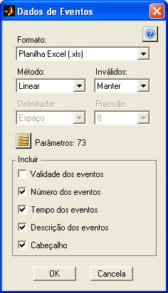
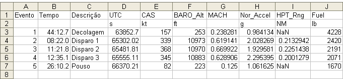
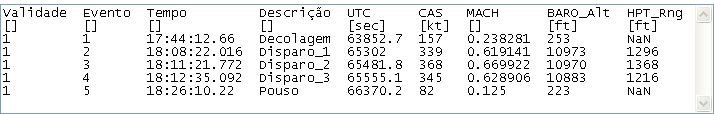
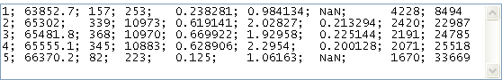

| Menu Ferramentas |
|
Após cadastrar
os eventos na ferramenta
de edição de eventos, é possível
obter uma tabela de dados com os valores dos parâmetros nos instantes
dos
eventos, permitindo ao usuário agilizar
os
procedimentos de análise e redução de dados.
Clique em
“Ferramentas ► Gerenciamento de eventos
... ►
Obter dados dos eventos” ou no
botão na
Barra de Ferramentas.

No campo
“Formato”, selecione o formato do arquivo que
deseja criar. As opções são:
|
Formato |
Descrição |
|
Planilha Excel (.xls) |
Planilha do
Microsoft Excel. |
|
Arquivo de
texto (.txt) |
Arquivo de
texto ASCII com cabeçalho. |
|
Arquivo de
texto (.dat) |
Arquivo de
texto ASCII apenas com valores numéricos. |
|
Arquivo MATLAB (.mat) |
Arquivo de
dados do MATLAB. |
No campo
“Método”, selecione o método de interpolação dos dados
no tempo. As opções são:
-
Linear;
-
Vizinho;
- Spline; e
-
Cúbico.
No campo “Inválidos”, indique como
deseja lidar com os pontos marcados como “inválidos”. As opções são:
|
Opção |
Descrição |
|
Manter |
Os dados são
obtidos para os pontos inválidos normalmente. |
|
Excluir |
Os dados são
obtidos apenas para os pontos válidos. |
|
NaN |
Os dados dos
pontos inválidos aparecem como “NaN”. |
Caso o formato
selecionado seja “Arquivo de texto”, indique
o caractere delimitador e o número de algarismos significativos nos
campos
“Delimitador” e “Precisão”. As opções são:
|
Delimitador |
Espaço,
Tabulação, Vírgula, Ponto-e-vírgula |
|
Precisão |
Zero a 16
algarismos |
|
Nota: Caso existam,
nos nomes de parâmetros, unidades ou descrições, ocorrências do
caractere delimitador escolhido, os mesmos serão convertidos em
sublinhado (“_”) para evitar que sejam confundidos com os delimitadores. |
 para
selecionar os parâmetros que deseja incluir na tabela de dados. A
seleção é feita da mesma forma que na ferramenta Seletor
de parâmetros. O
número de parâmetros selecionados é apresentado à direita do botão.
para
selecionar os parâmetros que deseja incluir na tabela de dados. A
seleção é feita da mesma forma que na ferramenta Seletor
de parâmetros. O
número de parâmetros selecionados é apresentado à direita do botão.
|
Opção |
Descrição |
|
Validade dos
eventos |
Inclui uma
coluna com a validade dos eventos (0
ou 1). |
|
Número dos
eventos |
Inclui uma
coluna com a numeração sequencial dos eventos (1, 2, 3, etc). |
|
Tempo dos
eventos |
Inclui uma
coluna com os tempos dos eventos no formato HH:MM:SS.MS. |
|
Descrição dos
eventos |
Inclui uma
coluna com a descrição dos eventos. |
|
Cabeçalho |
Inclui uma
linha de cabeçalho com os nomes dos parâmetros e uma linhas com as
unidades. |
|
Nota: Alguns
formatos não permitem a inclusão de certos dados. Nesses casos, os
campos ficarão desabilitados. |
Ao clicar “OK”,
os dados serão obtidos para todos os eventos
e apresentados no formato escolhido.
Exemplos:
Planilha Excel
com todos os dados incluídos:

|
Nota: O programa MS
Excel é limitado a 65.536 linhas e 256 colunas por planilha. Caso o
número de eventos (mais as linhas de cabeçalho) ou o número de
parâmetros (mais as colunas iniciais) seja superior ao limite do Excel,
a obtenção de dados nesse formato não será possível. |
Arquivo de
texto com todos os dados incluídos, método
“vizinho”, delimitador “espaço” e 6
algarismos
significativos:

Arquivo de
texto numérico (.dat), método “vizinho”,
delimitador “ponto-e-vírgula” e 6
algarismos significativos:

O arquivo de
dados do MATLAB (.mat) é salvo seguindo o padrão
de armazenamento de
dados adotado pelo IPEV, ou seja, uma matriz numérica “DADOS”
contendo os
dados obtidos e uma matriz de texto “PARAM” com os nomes dos
parâmetros. É possível
abrir esse arquivo normalmente no R_DAT.
O usuário pode
usar o arquivo apresentado como arquivo de
trabalho ou como fonte de dados para programas de redução de dados.
| |
Deslocar
eventos no tempo |
Conversões
de eventos |
|